Turing Machine¶
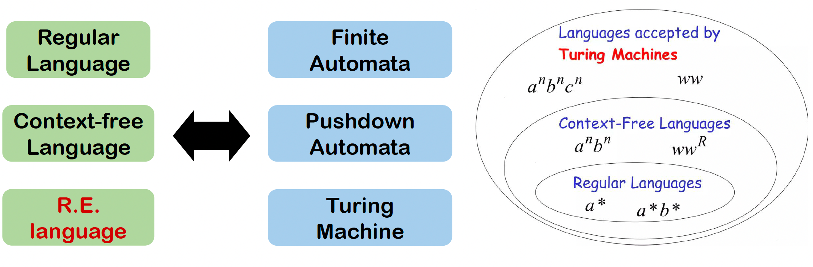
PDA仍存在只能在栈顶操作字符的缺陷，而图灵机的基本思想就是把磁带和栈结合在一起，即使用一个可写的磁带。
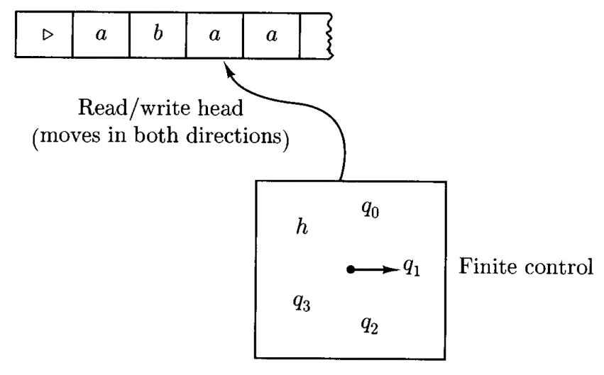
4.1 The Definition of Turing Machine¶
图灵机可以定义为一个五元组 \((K,\Sigma,\delta,s,H)\) , 其中：
- \(K\) 是一个状态的有限集合
- \(\Sigma\) 是一个字母表，包括 \(\sqcup\) (blank symblo) 和 \(\rhd\) (left end) ，但不包含 \(\rightarrow\) 和 \(\leftarrow\) 符号
- \(s\in K\) 是最初状态
- \(H\subseteq H\) 是停止状态(halting states)的集合
- 转移函数 \(\delta:(K-H)\times\Sigma\rightarrow K\times (\Sigma\cup\{\leftarrow,\rightarrow\})\) 满足 \(\forall q\in K-H \text{ if } \delta(q,\rhd)=(p,b)\text{, then } b=\rightarrow\) \(\forall q\in K-H \text{ and } a\in\Sigma\text{, if } \delta(q,a)=(p,b) \text{, then }b\neq \rhd\)
Note
\(\delta(q,a)=(p,b)\) 表示在状态 \(q\) 时如果在磁带上读到 \(a\) ，则转移到 \(p\) 状态，并进行 \(b\) 操作: \(b\) 为字符，则不移动磁带头，并写入字符 \(b\) ; \(b\) 位 \(\{\rightarrow,\leftarrow\}\) 则向对应方向移动磁带头。
如果机器没有转移函数可以操作，则停止(halt)在一个状态。
Graph Presentation
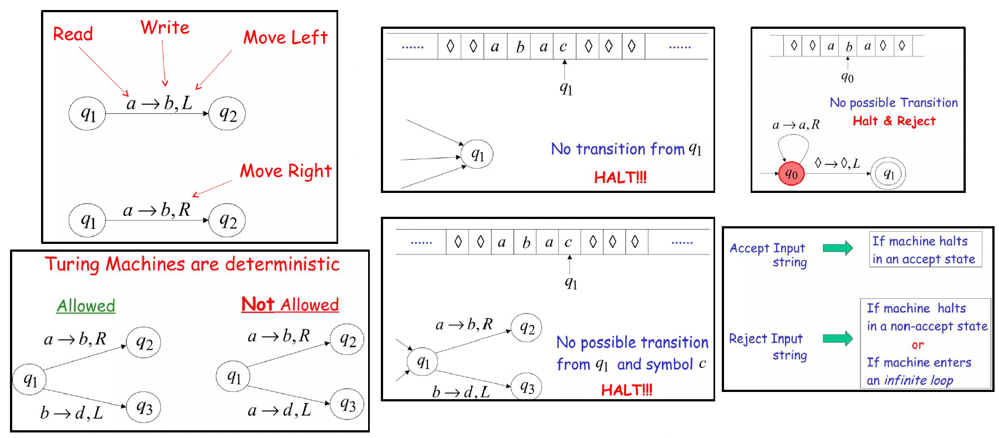
Example
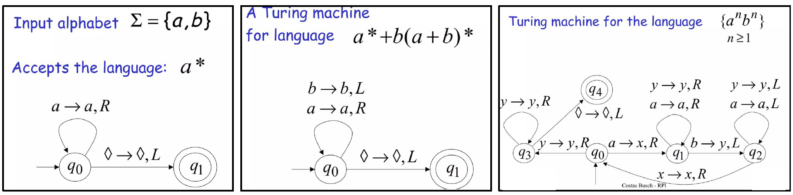
Configuration¶
Definition
TM \(M=(K,\Sigma,\delta,s,H)\) 的 configuration 定义为 \(K\times \rhd\Sigma^*\times (\Sigma^*(\Sigma-\{\sqcup\})\cup\{e\})\)
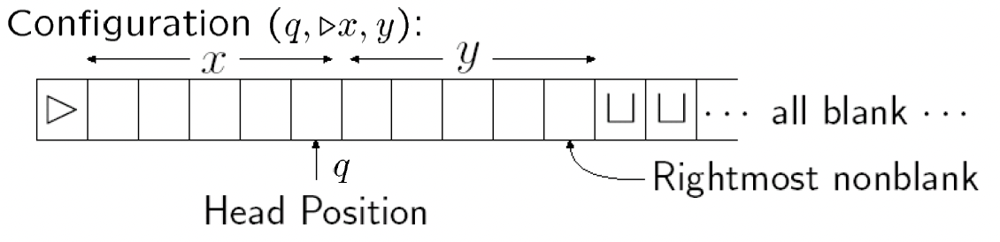
若一个configuration的状态(图中 \(q\) )属于集合 \(H\)，则称该配置为halted configuration。
一个configuration \((q,wa,u)\) 可以简单表示为 \((q,w\underline{a}u)\)
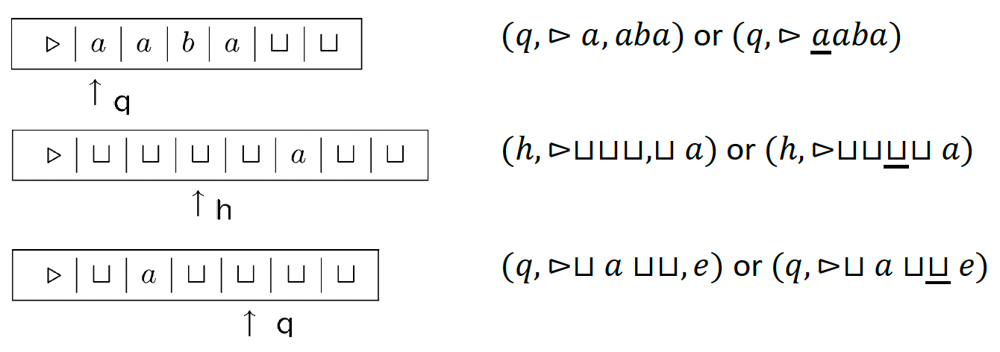
Computation¶
Defintion
对于TM \(M=(L,\Sigma,\delta,s,H)\) ，考虑以下两个configurations: \((q_1,w_1\underline {a_1}u_1)\) 和 \((q_2,w_2\underline{a_2}u_2)\) 其中\(a_1,a_2\in\Sigma\)，则定义图灵机的计算为 $$ (q_1,w_1\underline {a_1}u_1)\vdash_M(q_2,w_2\underline {a_2}u_2) $$ 当且仅当存在一个 \(b\in\Sigma\cup\{\rightarrow,\leftarrow\},\delta(q_1,a_1)=(q_2,b)\),满足一下之一
- \(b\in \Sigma,w_1=w_2,u_1=u_2,a_2=b\)
- \(b=\leftarrow,w_1=w_2a_2\) , 且满足以下之一: 如果 \(a_1\neq\sqcup\) 或 \(u_1\neq e\) , 则需满足 \(u_2=a_1u_1\) 如果 \(a_1=\sqcup\) 且 \(u_1=e\) , 则需满足 \(u_2=e\)
- \(b=\rightarrow,w_2=w_1a_1\) , 且满足以下之一: 如果 \(a_2\neq \sqcup\) 或 \(u_2\neq e\) 则需满足 \(u_1=a_2u_2\) 如果 \(a_2=\sqcup\) 且 \(u_2=e\) 则需满足 \(u_1=e\)
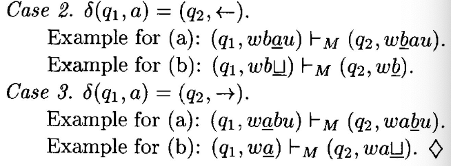
对于任何一个图灵机 \(M\) , \(\vdash^*_M\) 是 \(\vdash_M\) 在 reflexive, transitive 上的闭包。
图灵机 \(M\) 的计算是一个configuration序列 \(C_0,C_1,…,C_n\) 满足 $$ C_0\vdash_M C_1\vdash_M…\vdash_M C_n $$ 用 \(C_0\vdash^n_M C_n\) 来表示一个长度为 \(n\) (即需要 \(n\) 步)的图灵机计算。
Basic Machine¶
Defintion
定义两种基本图灵机: Symbol-writing 和 Hand-moving 机器:
\(\Sigma\) 是一个给定的字母表, \(a\in \Sigma\cup\{\leftarrow,\rightarrow\}-\{\rhd\}\) , 于是可以定义图灵机
\[ M_a=(\{s,h\},\Sigma,\delta,s,h) \]满足对于每一个 \(b\in\Sigma-\{\rhd\},\delta(s,b)=(h,a)\) , 对于 \(\rhd,\delta(s,\rhd)=(s,\rightarrow)\)
简单来说，就是一个固定状态转移的图灵机，上述定义中 \(a\) 为其他字符是被称为 symbol-writing 机器(\(M_a\))， \(a\in\{\leftarrow,\rightarrow\}\) 时被称为 hand-moving 机器(\(M_{\leftarrow},M_\rightarrow\))。
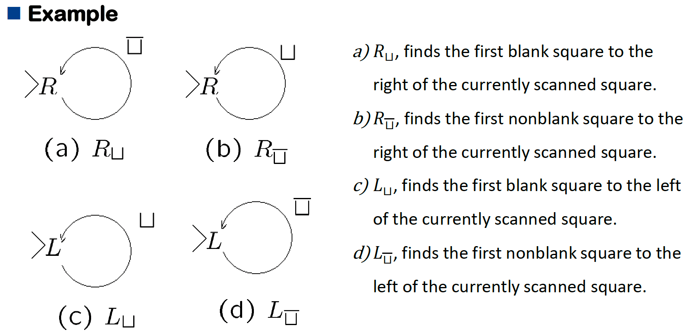
Combining¶
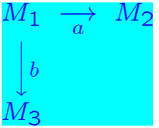
对于以上的图灵机组合，定义 \(M_i=(K_1,\Sigma_i,\delta_i,s_i,H_i),(i=1,2,3)\) ,他们的组合 \(M=(K,\Sigma,\delta,s,H)\) 满足:
- \(K=K_1\cup K_2\cup K_3\)
- \(s=s_1\)
- \(H=H_2\cup H_3\)
- 对于每一个 \(\sigma\in \Sigma,q\in K-H\) , \(\delta(q,\sigma)\) 的定义如下: 如果 \(q\in K_1-H_1\) 则 \(\delta(q,\sigma)=\delta_1(q,\sigma)\) 如果 \(q\in K_2-H_2\) 则 \(\delta(q,\sigma)=\delta_2(q,\sigma)\) 如果 \(q\in K_3-H_3\) 则 \(\delta(q,\sigma)=\delta_3(q,\sigma)\) 如果 \(q\in H_1\) 则若 \(\sigma=a\) , \(\delta(q,\sigma)=s_2\) ; 若 \(\sigma=b\) , \(\delta(q,\sigma)=s_3\) ; 否则 \(\delta(q,\sigma)\in H\)
4.2 Computing with Turing Machine¶
Definition
首先定义两个不同的停止状态 \(\{y,n\}\) , 任何halting configuration的停止状态为 \(y\) 的被称为 accepting configuration; 停止状态为 \(n\) 的被称为 rejecting configuration。
对于一个字符串 \(w\in(\Sigma-\{\sqcup,\rhd\})*\) , 如果 \((s,\rhd\underline{\sqcup}w)\) 构成(yields) 一个accepting configuration，则称图灵机 \(M\) 接收(accept) \(w\) , 如果构成一个rejecting configuration 则称 \(M\) 拒绝(reject) \(w\) 。
Definition
对于 \(L\subseteq \Sigma^*\) , 如果满足以下条件，则称 \(M\) 决定(decides) \(L\) :
- \(w\in L\text{ iff } M \text{ accepts }w\)
- \(w\notin L\text{ iff } M \text{ rejects }w\)
如果存在一个 \(TM\) 可以决定 \(L\) , 则称 \(L\) 是 recursive 的。
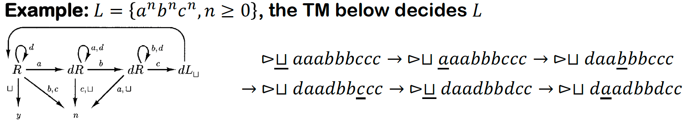
Definition
对于TM \(M=(K,\Sigma,\delta,s,H)\) , 字母表 \(\Sigma_0\subseteq\Sigma-\{\rhd,\sqcup\}\) 以及 \(L\in\Sigma^*_0\) , 如果对于任何 \(w\in \Sigma^*\) 满足以下条件: $$ w\in L\Leftrightarrow M \text{ halts on input } w $$ 则称 \(M\) semidecides \(L\) 。
当且仅当存在一个 TM 可以 semidecides \(L\) 时，称语言 \(L\) 是 Recursively Enumerable Languages(R.E.) 。
Supplyment
对于一个图灵机，可以通过一直延伸空格或一直循环的方式来达到无法停止。对于 \(w\) 在 \(M\) 上无法停止可以用 \(M(w)=\uparrow\) 来表示，即 \(M(w)=\uparrow\Leftrightarrow w\notin L\) 。
Theorem
如果 \(L\) 是 recursive language，则它是一个 R.E.。
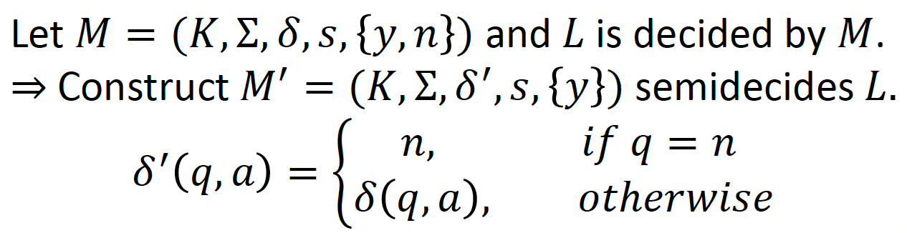
Theorem
一个 recursive language 的 complement 也是 recursive 的。
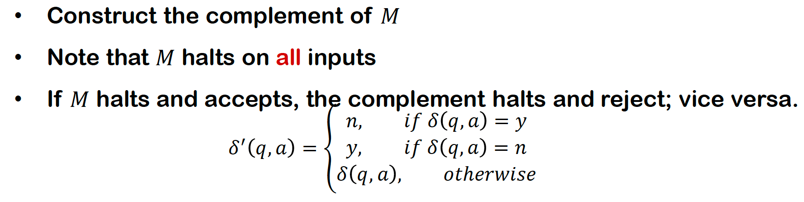
Theorem
两个 recursive language 的 union / intersection 也是 recursive 的。
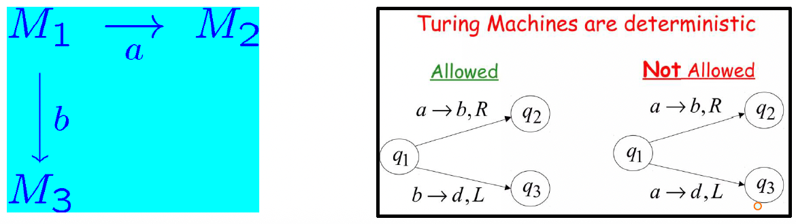
图灵机用于计算函数：
Definition
记TM \(M=(K,\Sigma,\delta,s,H)\) , 字母表 \(\Sigma_0\subseteq \Sigma-\{\rhd,\sqcup\}\) , 字符串 \(w\in \Sigma_0^*\) 。
假设 \(M\) 在输入 \(w\) 后停止了，且 \((s,\rhd\underline{\sqcup} w)\vdash_M^*(h,\underline{\sqcup}y)\) , 其中 \(y\in\Sigma_0^*\) , 则称 \(y\) 为 \(M\) 在 \(w\) 输入下的输出，记作 \(M(w)\) 。
对于一个函数 \(f:\Sigma_0^*\rightarrow \Sigma^*_0\) , 如果满足以下条件: $$ \forall w\in\Sigma^_0,M(w)=f(w) $$ 则称 \(M\) 计算(computes) \(f\) 。如果存在一个图灵机 \(M\) 可以计算函数 \(f\) , 则函数 \(f\) 是 *recursive** 的。
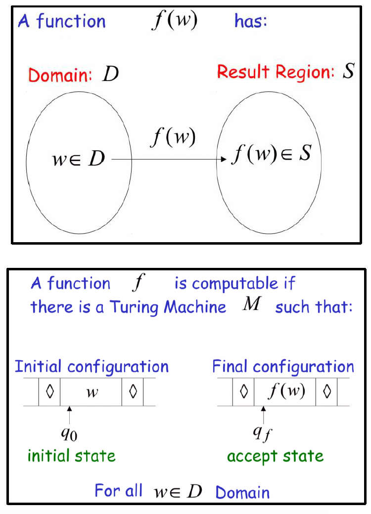
Example
- The Copy Machine \(C\)
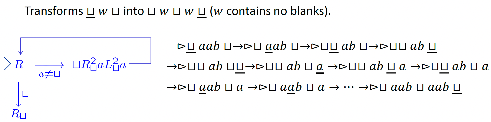
- The left-shifting Machine \(S_\leftarrow\)
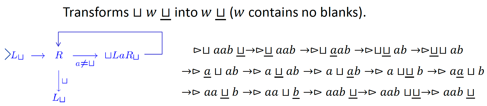
对于任意自然数，都可以用二进制表示，即可以用一个字符串 \(w=0\cup 1(0\cup 1)^*\) 来表示。用 \(num(w)\) 表示二进制字符串所对应的数字。则对于一个数字到数字的函数，如果其用二进制表示的字符串函数是 recursive 的，这个函数就是 recursive 的。
对于一个由多个数字计算得到结果的函数，可以有以下定义：
Definition
记TM \(M=(K,\Sigma,\delta,s,\{h\})\) , 其中 \(0,1,;\in\Sigma\) , 函数 \(f:N^k\rightarrow N(k\geq 1)\) , 如果对于任何 \(w_1,…,w_k\in0\cup1(0\cup1)^*\) 满足： $$ num(M(w_1;…;w_k))=f(num(w_1),…,num(w_k)) $$ 则称 \(M\) 计算 \(f\) 。如果存在一个图灵机 \(M\) 可以计算函数 \(f:N^k\rightarrow N\) , 则函数 \(f\) 是 recursive 的。
Example
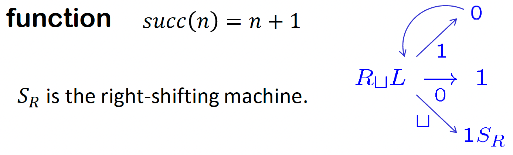
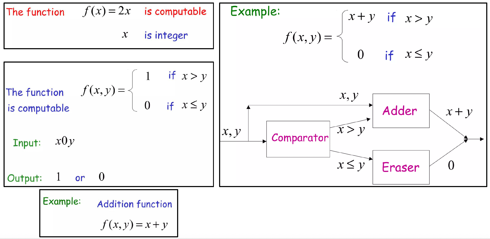
4.3 Extension of Turing Machine¶
图灵机的拓展主要有以下几种：
- Multiple tapes
- Two-way infinite tape
- Multiple heads
- Multi-dimensional tape
- Non-determinism
这些拓展并不能提升图灵机的能力，但是可以方便图灵机的设计。
Multiple tapes¶
Definition
对于一个整数 \(k\geq 1\) , 一个 k-tape TM 是一个五元组 \((K,\Sigma,\delta,s,H)\) 其中 \(K,\Sigma,s,H\) 的定义与普通 TM 相同，转移函数 \(\delta\) 为： $$ \delta:(K-H)\times\Sigma^k\rightarrow K\times(\Sigma\cup{\leftarrow,\rightarrow})^k $$
Defition
\(M=(K,\Sigma,\delta,s,H)\) 是一个 k-tape TM，则 \(M\) 的 configuration 满足： $$ K\times(\rhd\Sigma*\times(\Sigma*(\Sigma-\sqcup))\cup{e})^k $$
对于 mutiple tapes , 作出以下约定：
- 输入字符串放置在第一条磁带上
- 其他磁带初始为空白，磁头位于每条磁带最左侧的空白方格内；
- 计算结束后，输出位于第一条磁带上；其他磁带将被忽略。
Example
- The Copying Machine
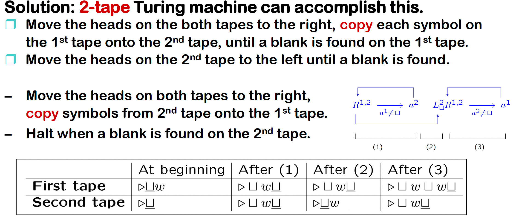
- Add arbitrary any binary numbers
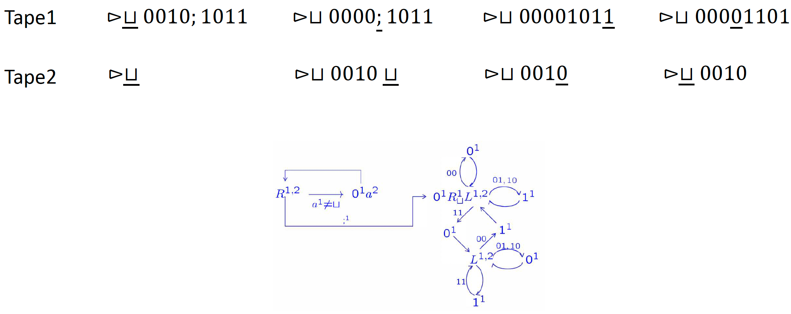
Theorem
设 \(𝑀=(𝐾,\Sigma,\delta,𝑠,𝐻)\) 为一个 k-tape TM \((k\geq1)\)。则存在一个标准图灵机 \(𝑀'=(𝐾',\Sigma',\delta',𝑠',𝐻)\)，其中 \(\Sigma\subseteq\Sigma'\)，使得以下条件成立：
- 对于任意输入字符串 \(𝑥\in\Sigma^*\)，\(M\) 在输入 \(x\) 时停止，并在第一个磁带上输出 \(y\) 当且仅当 \(M'\) 在输入 \(x\) 时也停止，且停止状态相同，并在其磁带上输出 \(y\)
- 如果 \(M\) 在输入 \(x\) 上经过 \(t\) 步后停止，则 \(M'\) 在输入 \(x\) 上经过步数为 \(O(t(|x|+t))\) 后停止。
Proof
用一个单磁带图灵机模拟一个 k-tape 图灵机该单磁带图灵机的磁带被分割成 2k 个磁道：
- k 个磁道用于存储磁带符号
- k 个磁道用于存储磁头位置（每个磁道一个）
从给定的 k-tape 图灵机 \(M=(K,\Sigma,\delta,s,H)\) 构造一个标准图灵机 \(M'=(K',\Sigma',\delta',s',H')\) :
- \(\Sigma'=\Sigma\cup\{0,1\}\)
- \(M'\) 的字母表由 \(M\) 的字母表和 2k-tuples \((𝑎_1,𝑏_1,…,𝑎_𝑛,𝑏_𝑛)\) 组成\(𝑎_1,…,𝑎_𝑛\inΣ,𝑏_1,…,𝑏_𝑛\in\{0,1\}\)。即 \(M'\) 的多磁带部分都单元格内字符是 2k-tuple。
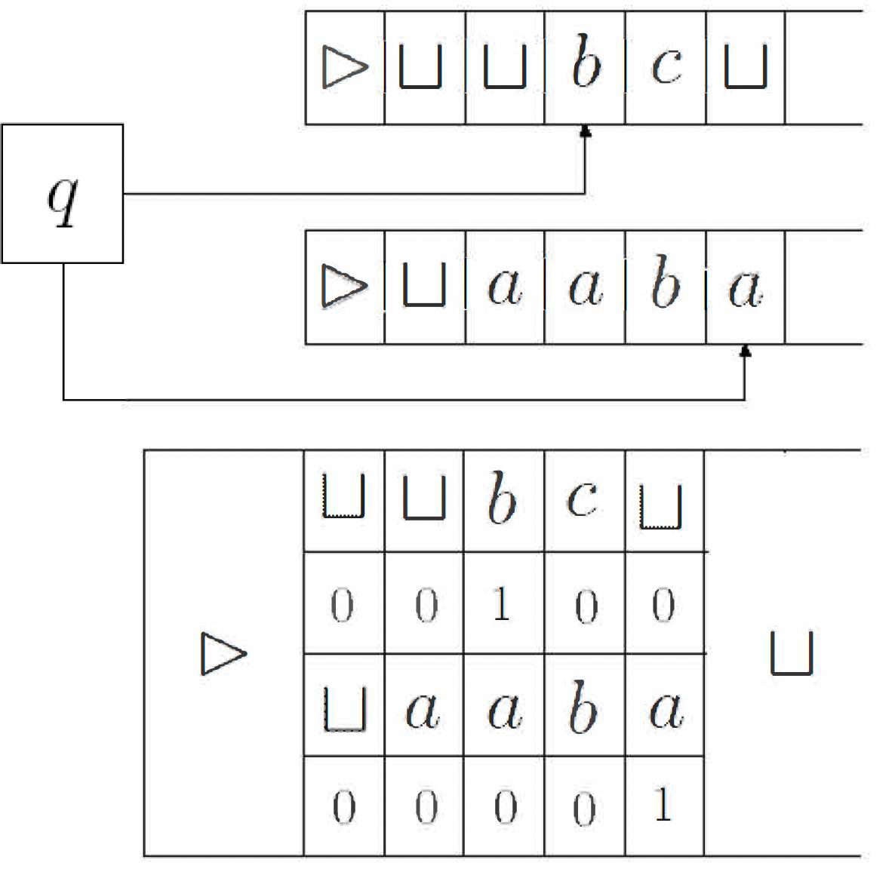
Phase1: Representation of the initial configuration of 𝑀
假定 \(M'\) 的磁带上最初是一个输入字符串 \(q\)
- 首先把所有字符都右移一个位置，然后在腾出来的那个空位写上 \((\sqcup,1,…,\sqcup,1)\) ，用于表示 k 个磁带的开始。
- 然后从这个位置开始继续向右读取，如果遇到有效字符 \(a\) ，则写入 \((a,0,\sqcup,0…,\sqcup,0)\) ，知道读取到 \(\sqcup\) 表示字符串结束。
- Time Complexity: \(O(|w|)\)
Phase 2: Simulate the computation of 𝑀
- 从磁头扫描磁带上尚未细分为磁道的第一个位置开始模拟每一步操作。
- 沿磁带向左向下扫描，收集 \(M\) 的 k 个磁头扫描过的符号信息。识别所有扫描过的符号后，返回到最左侧的空白处，然后改变有限控制器的状态，以反映标记磁头位置上 \(\Sigma\) 的 \(k\) 个磁道中的 \(k\) 个符号元组。
- 沿磁带再向右向下扫描，以更新磁道，使其与 \(M\) 的移动保持一致。
- Time Complexity: \(O(|w|+2+t)\)
Corollary
任何由 k-tape 图灵机计算的函数或由 k-tape 图灵机 decided 或 semidecided 的语言，也可以分别由标准图灵机计算, decided 或 semidecided 。